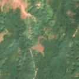
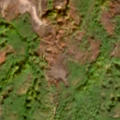

11,3 ha de pădure schimbată lângă Ohabița
Între 23 august 2026 și 28 august 2026, pe aproximativ 11,3 ha de pădure din comuna Păltiniș, lângă Ohabița, județul Caraș-Severin, imaginile Sentinel-2 arată că vegetația a dispărut sau s-a schimbat puternic. E o schimbare care merită verificată.
Autorizația de tăiere
de confirmat pe poze
N-am găsit o autorizație care să acopere zona, dar nu putem spune ce s-a întâmplat aici: analistul AI fie n-a văzut încă pozele, fie le-a văzut și nu e sigur. Nu dăm roșu pe o bănuială, și nici nu spunem că e în regulă. Analistul n-a putut spune ce s-a întâmplat aici din poze. Rămâne de verificat cu o imagine mai bună.
Ce se vede în poze: În poza detaliată zona marcată era în mare parte pădure, cu o mică poiană în partea de jos. În poza «după» terenul pare maro și cenușiu, dar și multe alte locuri din jur au culori maro de toamnă, așa că nu pot spune sigur dacă s-a tăiat ceva.


Înainte și după: Copernicus Sentinel-2, 10 m pe pixel, conturul zonei cu portocaliu. Poza detaliată (Esri World Imagery) e de acum 1–4 ani: arată ce era acolo înainte, nu tăierea.
Pe scurt
- Identificator
- 20260828_45365_22085
- Locul
- Ohabița, comuna Păltiniș, județul Caraș-Severin (SIRUTA 53425)
- Coordonate (centru)
- 45.36464, 22.08538 · Google Maps · OpenStreetMap
- Suprafața
- 11,3 ha (din pixeli de 10 m; ± câțiva pixeli pe margine)
- Ultima imagine cu pădurea întreagă
- 23 august 2026
- Prima imagine cu schimbarea
- 28 august 2026
- S-a lărgit
- 2 septembrie 2026
- Imagini în care se vede schimbarea
- 9
- Cât de sigur e semnalul din satelit
- ridicată
- Terenul
- o parte în pădure de stat, o parte privată sau fără amenajament publicat
- Garda Forestieră
- Timișoara
Dacă vrei să verifici sau să sesizezi
- Pădurile din județul Caraș-Severin sunt în grija Gărzii Forestiere Timișoara, care controlează tăierile și dă amenzile.
- Formularul Gărzii Forestiere Naționale primește sesizări și fără nume. Trimite linkul acestei pagini, coordonatele și pozele. Dacă tăierea e în desfășurare, sună la 112.
- Autorizațiile și transporturile de lemn se pot căuta în Inspectorul Pădurii.
Pagina arată ce se vede din satelit și ce scrie în registrul public; nu e o dovadă în sine.
Cum citezi zona
Linkul acestei pagini nu se schimbă. Dacă zona iese vreodată de pe hartă, pagina rămâne, cu data și cu ce știam despre ea.
Pădurea RO, zona 20260828_45365_22085: 11,3 ha, Ohabița, comuna Păltiniș, județul Caraș-Severin; schimbare văzută din satelit între 23 august 2026 și 28 august 2026. https://iliemihai.github.io/padurea-ro/zona/20260828_45365_22085/ (consultat la [data]). Date: CC BY 4.0.
Datele zonei: GeoJSON · toate zonele: date deschise · licența CC BY 4.0.
Istoricul zonei pe hartă
Starea se poate schimba când registrul publică o autorizație sau când analistul vede poze mai bune. O ținem aici, ca un link citat să arate și ce spuneam atunci.
Pe hartă cel târziu din 5 noiembrie 2026.
- 5 noiembrie 2026 – azi · de confirmat pe poze
Detalii tehnice, pentru verificare
De ce acest nivel de încredere:
- văzută schimbată în 9 imagini diferite
- peste 3 ha
- AI-ul vede pădure dispărută
- în poze, zona se schimbă vizibil față de pădurea din jur
Ce a văzut analistul cu context: Pe imaginea Sentinel-2 din 24.10.2026, conturul e maro-cenușiu, cu textură pestriță și fără margini drepte, iar zone maro asemănătoare apar și în vederea largă, în nord, de-a lungul drumului. Poiana inferioară exista deja în imaginea din 2024 și părea pătată de pământ în imaginea din august 2026. Nu se văd cioate, resturi de exploatare sau limite clare de parchet, deci tăierea rasă nu e susținută. Alternativele (culori de toamnă, alunecare de teren pe pantă de 18° sau arsură) nu pot fi excluse, iar lipsa autorizațiilor în 5 km nu schimbă concluzia vizuală.
- Placa Sentinel-2
- 34TER
- NDVI de referință
- 0.86
- NBR de referință
- 0.65
- Scăderea în pădurea din jur
- 0.07
- Persistență
- 1.0
- NDVI / NBR după
- 0.391 / 0.051
- Analistul de zi (model)
- taiere · 0.8 · claude-haiku-5-5
- Analistul cu context (model)
- neclar · 0.35
Cum se calculează fiecare: metodologia.
Pune harta zonei într-un articol
Copiază codul în articol (merge în majoritatea site-urilor de știri). Sau pune doar linkul: WhatsApp, Facebook și X arată singure poza zonei.